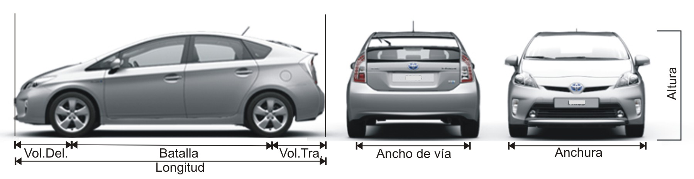
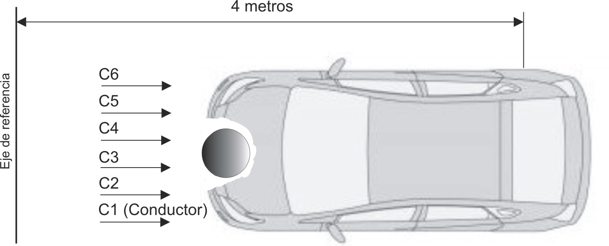

Menú Principal
v0.1.2025-08-20T15:00
Método Wood

Tipo de medición
---Elegir tipo de medición---
Medición de deformaciones
Datos reales
Información básica del vehículo
DATOS DEL VEHÍCULO
TARA (masa del vehículo en kg
Peso de los ocupantes (kg)
------------
------------
------------
MEDIDAS DEL VEHÍCULO
Milímetros
Metros
Longitud total (Lg)
Anchura (a)
Voladizo trasero
Batalla (B)
Voladizo delantero = Lg-(B + voladizo trasero)
------------
------------
------------
Distancia del C.G. a la F.P.I (h)
DATOS DE LA DEFORMACIÓN
Milímetros
Metros
X = Medida de Referencia - (B + voladizo delantero)
Anchura (L)
C'1
C'2
C'3
C'4
C'5
C'6
C' máxima
C1 = C'1 - X
C2 = C'2 - X
C3 = C'3 - X
C4 = C'4 - X
C5 = C'5 - X
C6 = C'6 - X
C máxima = C' máxima - X
Calcular
DATOS REALES DE LA DEFORMACIÓN
Milímetros
Metros
C1
C2
C3
C4
C5
C6
C máxima
Calcular